Karahara
Protagonist | Flamechaser-3
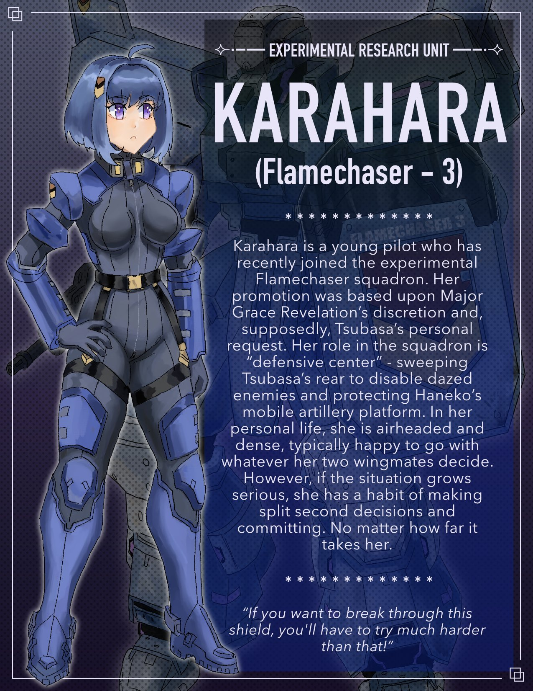 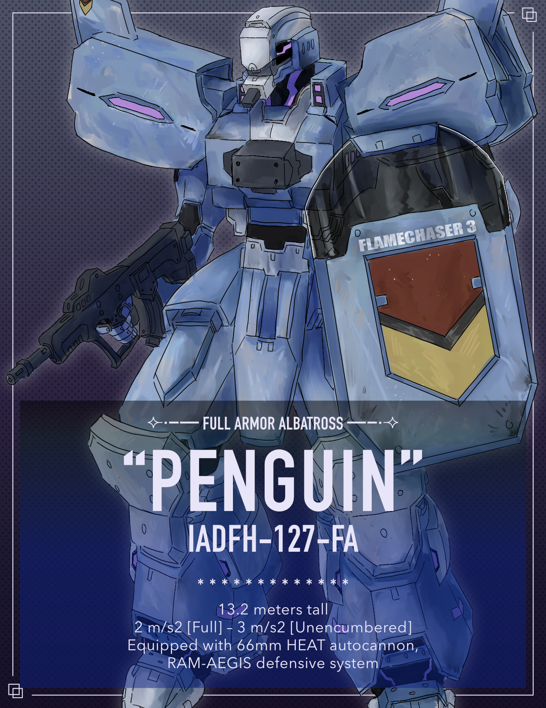Protagonist | Flamechaser-3
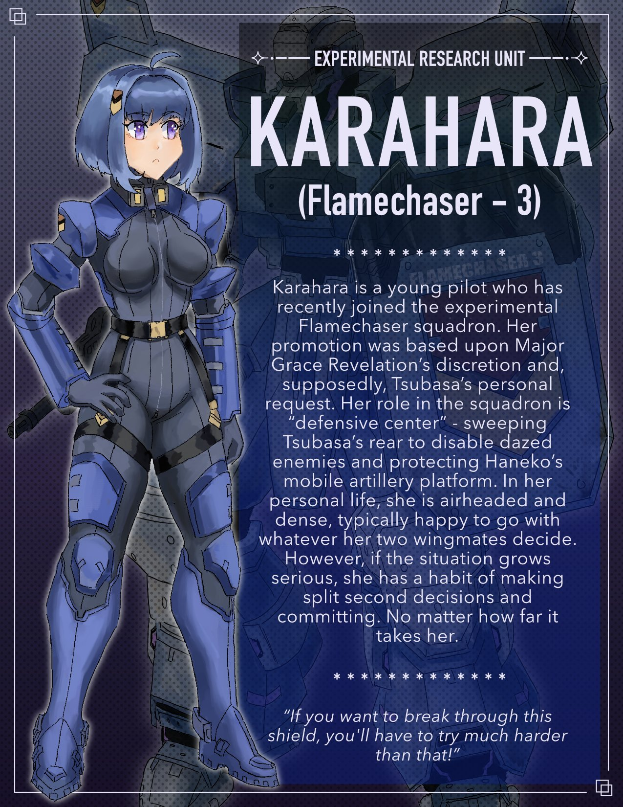 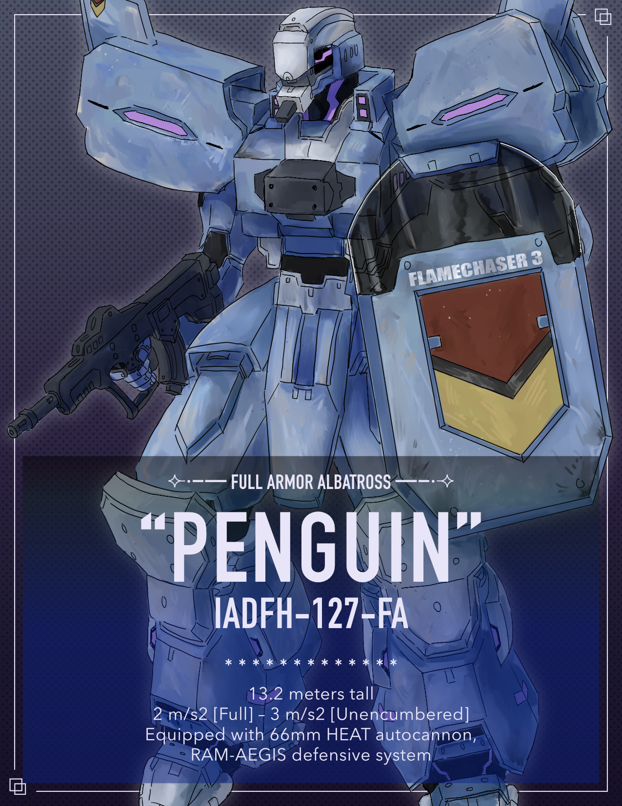Love Interest | Flamechaser-1
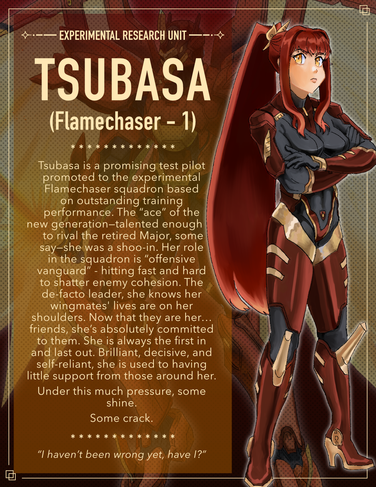 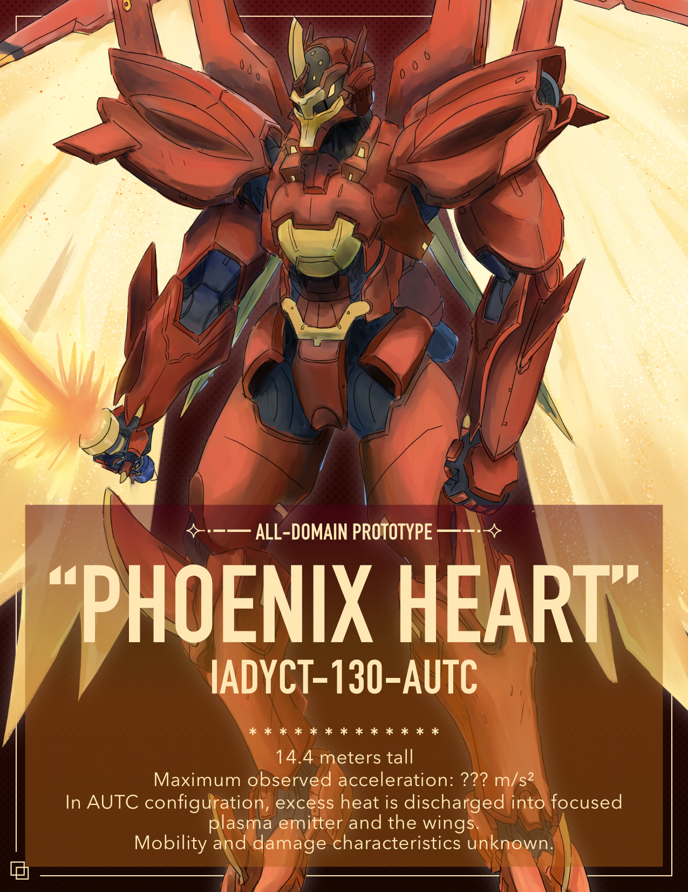Love Interest | Flamechaser-2
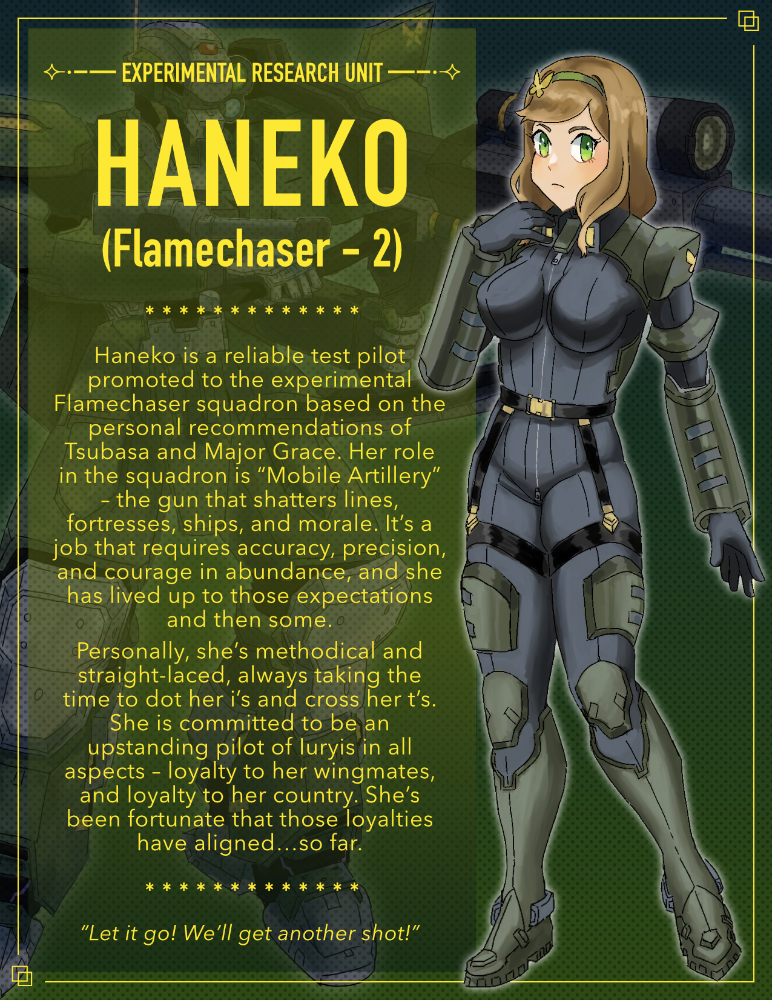 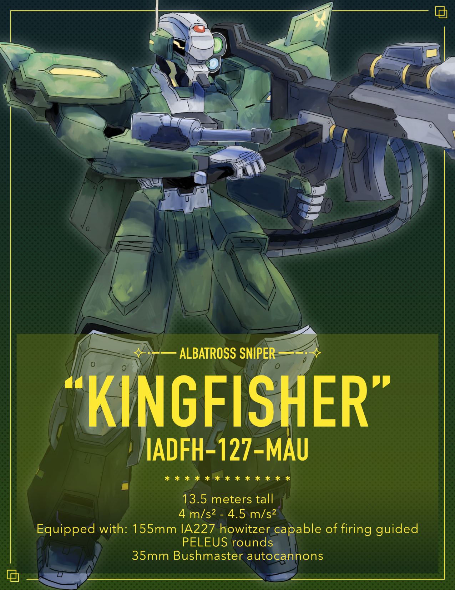Primary Rival | Gem-1
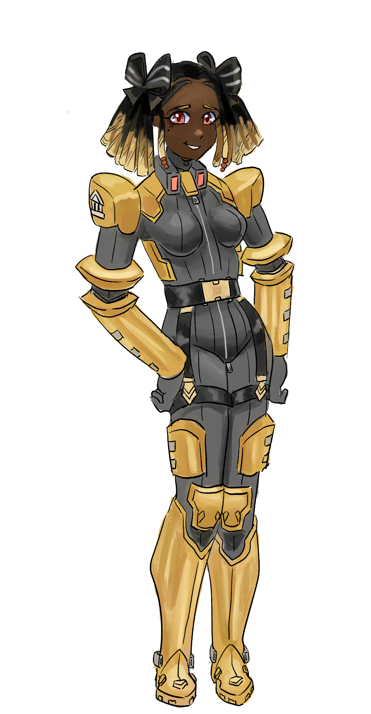A rich girl from a prominent military family in Iuryis and Brigadier General Claude Jing's favorite candidate for the cadet program.
Secondary Rival | Gem-2
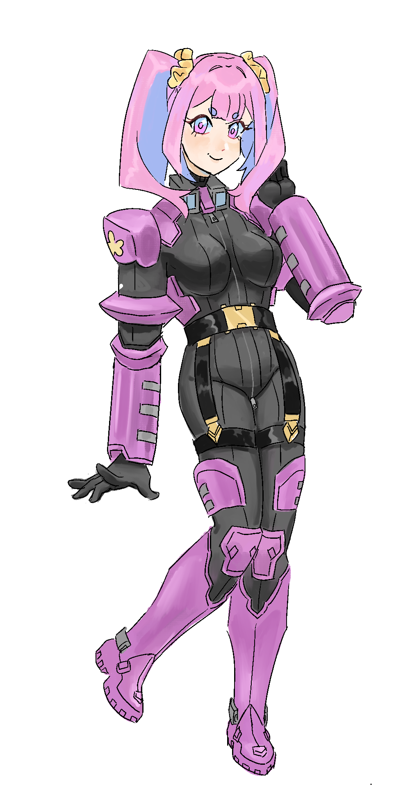A promising candidate for the cadet program and Lizbeth's childhood friend. She spends most of her time preoccupied with her appearance and prefers shopping in the Yurisekai colony town's civilian districts over focusing on her studies.
Secondary Rival | Gem-3
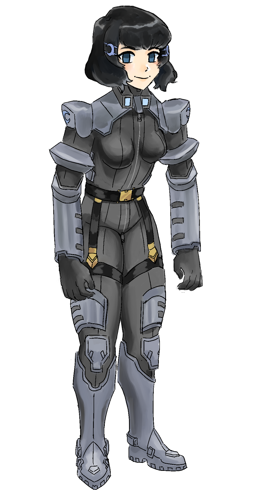A child prodigy who prefers lazing around all day and rarely puts in more than the bare minimum of effort. Her natural talents nevertheless caught Brigadier General Claude Jing's eye.
Rival?
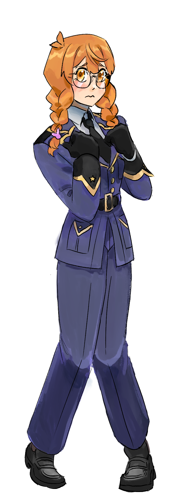A clumsy and shy girl who somehow was still selected for the cadet program.
The shining star of Iuyris's military force and the pilot of their experimental next-generation All-Domain Fighting Humanoid. She may look young, but she's actually the same age as Rosie and Major Grace. Her current assignment is to teach the next generation of pilots and select the best and brightest to continue the war for independence against Tchempo.
The military official assigned to directly overseeing Yurisekai Base's operations, including both the active military wing and the cadet-training academy. Rumor has it that she was once one of Iuryis's most fearsome pilots...
The highest ranked military official stationed at Yurisekai Base. She believes that natural talent and birthright always trumps hard work and backs the next generation of pilots accordingly.
The head mechanic of Yurisekai Base. She used to be a pilot candidate, but she decided that the underside of the hangar was where she'd rather be. However, she still maintains strong friendships with both Lieutenant Hope and Major Grace from her cadet academy days.